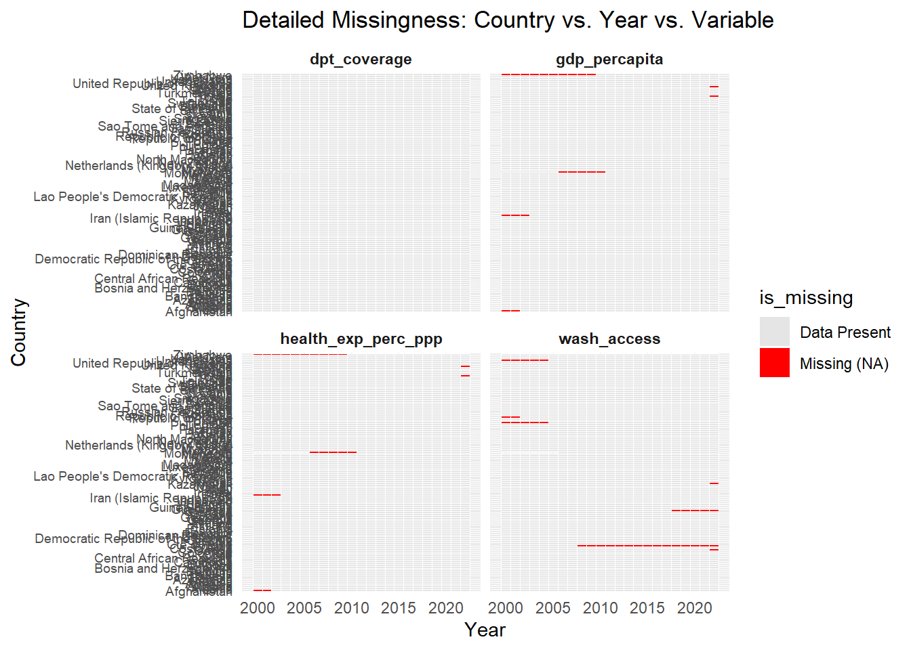
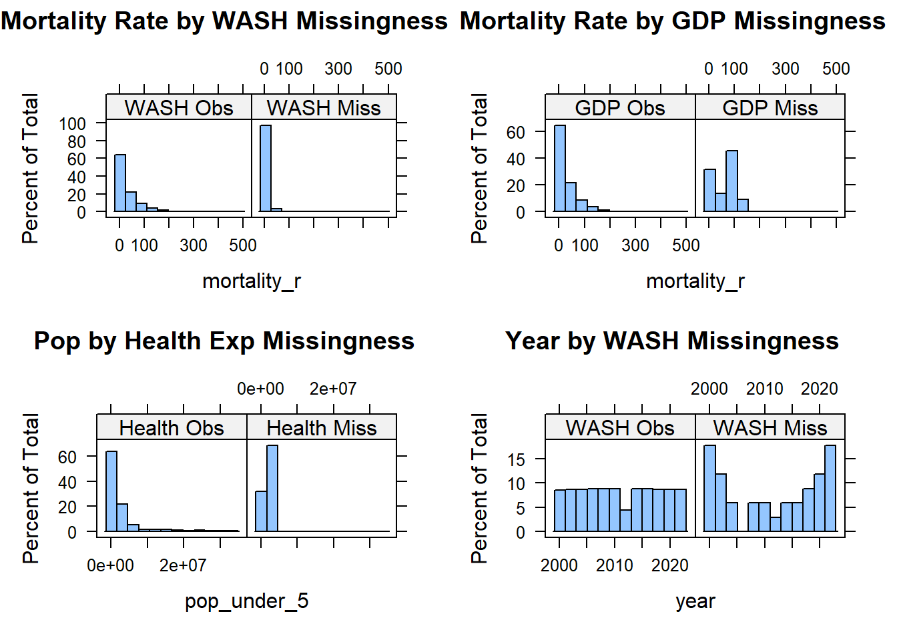
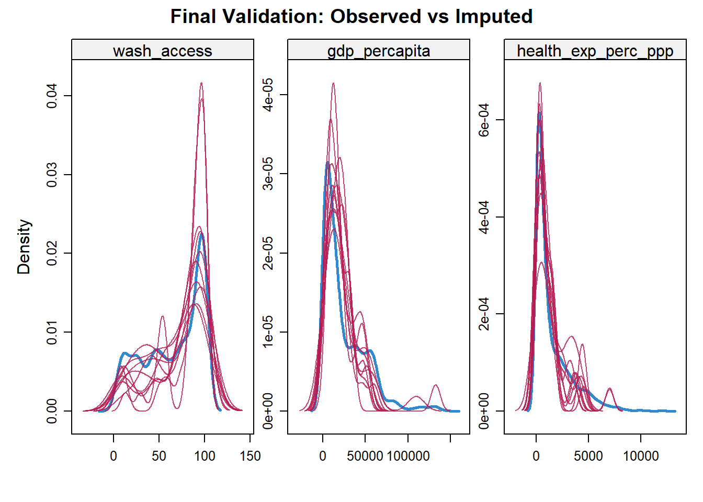
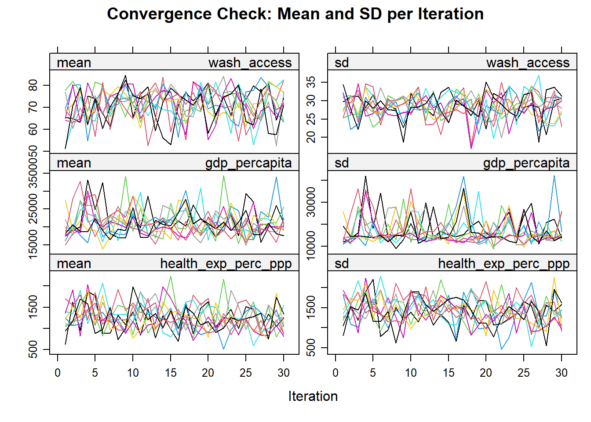
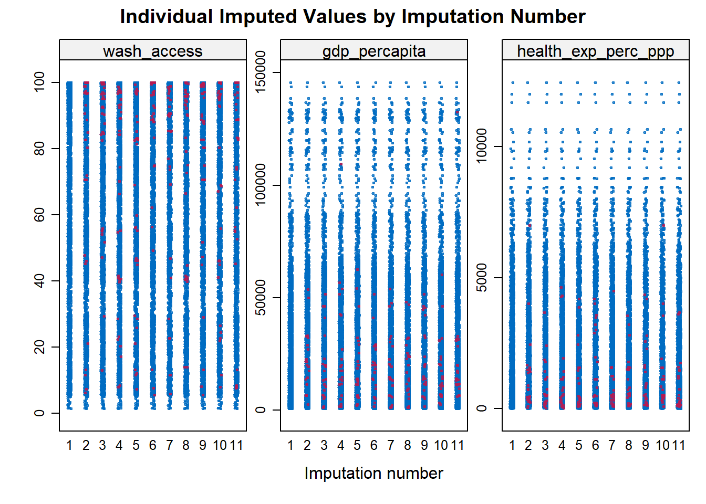

Economic Growth and Health System Factors in Global Child Mortality
Author
Collins Audi
Published
December 4, 2025
BACKGROUND AND PURPOSE OF THIS HEALTH DATA ANALYSIS PROJECT
Reducing the number of children who die before their fifth birthday is a core target within the sustainable development goal three of health and well-being and is a sign of a country’s human development index. Previously, the Preston curve showed a strong correlation between a country’s per capita income and under-5 deaths (Preston, 1975): whereby higher income levels are associated with lower under-five mortality. Globally, the under-5 mortality has reduced by more than half from 94 per 1000 live births in 1990 to 37 per 1000 live births in 2023 (World Bank, 2023). This reduction can be attributed to economic growth and global health programs.
Research in early 2000s established that economic growth alone is not enough to protect children unless it is paired with strategic priority-based investments in healthcare infrastructure. Houweling et al. (2005) reported that countries with comparable income levels experienced different outcomes because economic growth increased within-country inequalities and suggested increased public spending on health services like immunization and skilled birth attendance focusing on poor communities to close the gap. These inequalities were also confirmed by Cesar G Victoria (2003) who observed that the disparity between the rich and poor countries was becoming wider due to increasing income disparities within countries, and suggested increased interventions targeting the poor and equitable universal health coverage.
Conversely, present evidence suggests that preventing mortality has evolved from access to the quality of care. Magret Kruk et al (2018) argues that despite the increased domestic and donor funding of health programs which has saved lives, the quality of care across different countries is often inadequate and recommends Universal Healthcare Coverage as an opportunity to improve the quality in health systems. The WHO Monitoring Report 2023 reported that while service coverage access improved across income status between 2015 and 2019, it was accompanied by limitations.According to this report, the service coverage index for healthcare has stagnated since the sustainable development goals were launched in 2015.The report further reveals how the focus of many countries has been on vertical programs rather than investing in health system capacities. In the report, while the low income and low middle income countries experienced catastrophic out-of-pocket expenditures despite service access gains, the upper middle income countries had gaps in access to services. This suggests that expenditure on healthcare by a country does not guarantee positive outcomes because it depends on the structural stability of the systems, yet this is not well quantified and documented. The report also revealed gaps in access to reproductive, maternal, neonatal, child and adolescent health services globally.While the importance of system pillars and spending is known, it remains unclear whether the efficiency of financial investment is conditional on the pre-existing structural maturity of the health system.
This project investigates these determinants of child survival through a quantitative analysis of cross national data, guided by two core research questions:
Question: To what extent do national income, government health spending, and preventive/infrastructural factors explain variations in child mortality, and does the effect of health spending vary by a country’s income status, used as a proxy for structural health system maturity?
While high income status of countries may not automatically guarantee better access to healthcare as indicated above, it does have better health system stability at baseline. Hence, income status is utilized in this study as a proxy for health system stability and horizontal infrastructure required to for sustainable survival outcomes.
Variables per country (2000-2002) • Under_5 mortality rate • Access to water and sanitation • Healthcare investment (as a % of GDP) • GDP Per Capita (adjusted by Our World in Data to reflect living costs and inflation) • Under-5 population size
Sources of Data • Our World in Data • UNICEF • World Bank
STEP 1: IMPORTING, CLEANING AND MANIPULATING THE FIRST DATASET: GLOBAL UNDER_5 MORTALITY DATA
Step 1-Phase 1: Preparing the Mortality Data My first task was to take the raw mortality records from UNICEF and transform them into a format that works for statistical analysis. I followed these four steps:
i. Importing the Data: I loaded the UNICEF under 5 mortality file and performed an initial clean to remove any hidden spaces in the text that could cause errors later.
ii. Selecting the Best Estimates: The raw file contains three different numbers for every country: a high, low, and median estimate. I filtered the data to keep only the Median rows. This ensures my analysis is based on the most likely figures while removing unnecessary noise.
iii. Cleaning Column Names: When R imports data, it often adds an “X” in front of years (like X2000). I stripped these “X” prefixes away so the year columns would be clean and easy to read.
iv. Reshaping for Analysis (The “Pivot”): Most importantly, I changed the data from a “wide” layout to a “long” layout. Instead of having 30 separate columns for different years, I collapsed them into two columns: Year and Mortality Rate.
v. The Result: By the end of this step, I had a clean, vertical timeline for every country. This consistent structure is what allows me to merge the mortality data with other factors like wealth and health spending for the next part of my story.
#Importing and managing the first data set by UNICEF: Under 5 mortality dataunder_5_mortality <-read.csv("C:/Users/audic/Documents/GitHub/Beyond-GDP-Health-System-Drivers-of-Child-Survival/under_five_mortality.csv", header =TRUE, sep =',')library(dplyr)library(tidyr)library(stringr)colnames(under_5_mortality) <-str_trim(colnames(under_5_mortality)) # remove leading/trailing spacesunder_5_mortality <- under_5_mortality[, 1:37] %>%filter(bound =="Median") %>%# keep only Median rowsrename_with(~gsub("^X", "", .x), 5:37) # remove 'X' prefix from columns 5 to 37# Step 1: Keeping only Median rows necessary, leaving upper and lower boundaries since our interest is in modelling.colnames(under_5_mortality)
# Step 2: Pivot year columns into long formatunder_5_mortality <- under_5_mortality %>%pivot_longer(cols =5:37,names_to ="year",values_to ="mortality_r", ) %>%mutate(year =as.integer(year),mortality_r =round(mortality_r, 1))
Step 1-Phase 2: Importing the Health and Economic Indicators
To build a complete picture of the factors influencing under 5 mortality, I imported and processed five additional datasets. I followed these steps for each one:
i. Importing the Key Variables: I loaded datasets for Vaccine Coverage (DPT shots), Healthcare Expenditure (as a percentage of GDP), GDP per capita, WASH Access (clean water and sanitation), and the total Under 5 Population.
ii. Standardizing the Values: To ensure the data was precise but easy to read, I applied a rounding function to all numeric columns. I rounded the percentages for vaccines and WASH, as well as the dollar amounts for GDP, to one decimal place.
iii. Data Alignment: Each of these files was checked to ensure they contained the necessary country and year information. This allows these specific health and economic indicators to be matched perfectly with the mortality data I prepared in Phase 1.
The Result: By the end of this phase, I had a collection of clean, standardized tables. Each table represents a different “piece of the puzzle”—from a country’s total wealth and population size to its specific investments in health and infrastructure. These are now ready to be combined into a single master dataset.
#Importing and managing the immunization data setimmunisation <-read.csv("C:/Users/audic/Documents/GitHub/Beyond-GDP-Health-System-Drivers-of-Child-Survival/immunisation.csv", header =TRUE, sep =',')#Rounding off immunization coverage data to one decimal placeimmunisation <- immunisation %>%mutate(dpt_coverage =round(dpt_coverage, 1))#Importing and managing the healthcare expenditure data set as a % of GDPh_expenditure <-read.csv("C:/Users/audic/Documents/GitHub/Beyond-GDP-Health-System-Drivers-of-Child-Survival/health_exp.csv", header =TRUE, sep =',')#Rounding off health expenditure per capita figures to one decimal placeh_expenditure <- h_expenditure %>%mutate(health_exp_perc_ppp =round(health_exp_perc_ppp, 1))#Importing gdp per capita data from Our World in Datagdp_per_capita <-read.csv("C:/Users/audic/Documents/GitHub/Beyond-GDP-Health-System-Drivers-of-Child-Survival/gdp.csv", header =TRUE, sep =',')#Rounding off gdp per capita to one decimal placegdp_per_capita <- gdp_per_capita %>%mutate(gdp_percapita =round(gdp_percapita, 1))#Importing and managing the access to WASH (access to clean water) data setwash <-read.csv("C:/Users/audic/Documents/GitHub/Beyond-GDP-Health-System-Drivers-of-Child-Survival/wash.csv", header =TRUE, sep =',')wash <- wash %>%mutate(wash_access =round(wash_access, 1))#Importing Under 5 population data setunder5_pop <-read.csv("C:/Users/audic/Documents/GitHub/Beyond-GDP-Health-System-Drivers-of-Child-Survival/population.csv", header =TRUE, sep =',')#Importing country income status data setincome <-read.csv("C:/Users/audic/Documents/GitHub/Beyond-GDP-Health-System-Drivers-of-Child-Survival/income_country.csv", header =TRUE, sep =',')
Step 1-Phase 3: Data Merging and Coverage Audit
In this final processing phase, I combined all individual datasets into one master file and conducted a thorough audit to check the quality of our timeline across different countries.
Merging into a Master Dataset: Using a “left join” function, I connected the mortality data with the five other datasets (Vaccines, WASH, GDP, Population, and Health Spending). I used the unique Country Code and Year as the keys to ensure every piece of information aligned perfectly across all sources.
Cleaning the Combined Table: After merging, the dataset contained several duplicate country name columns. I removed these extra columns and filtered the data to ensure that every row included the three most important variables for our bubble chart in the next exercise: GDP per capita, Mortality Rate, and Under 5 Population.
Auditing the Timeline: I conducted an audit to see how consistent the timeline was across different nations. I compared every country against the expected 23 year span (2000 to 2022).
Full Range Coverage: The audit revealed that 177 countries have a complete, uninterrupted record for the entire 23 year period.
Partial Coverage: Only 9 countries were identified as having partial or missing years. I kept these in the dataset to maintain global diversity, as reporting gaps are common in fragile or developing states.
Final Export: Once the data was verified, I exported the final collection as “merged_data.csv.” This master file now contains 186 countries in total, providing a robust mix of stable and developing nations.
The Result: I now have a high quality master dataset. The fact that 177 countries have a full data range means that the patterns we see in the bubble chart are backed by a very large and reliable body of global evidence. This structure allows us to see not just where countries are today, but how they have moved over time.
#Merging the datasets into a master dataset using iso_code and year columns, enabled by the left_join functionmerged_df <- under_5_mortality %>%left_join(immunisation, by =c("iso_code", "year")) %>%left_join(wash, by =c("iso_code", "year")) %>%left_join(gdp_per_capita,by =c("iso_code", "year")) %>%left_join(under5_pop, by =c("iso_code", "year")) %>%left_join(h_expenditure, by =c("iso_code", "year")) merged_df <- merged_df %>%select(-country.y,-country.y.y,-country.y.y.y,-country.x.x,-country.x.x.x,-bound,country = country.x) %>%filter(!is.na(gdp_percapita), !is.na(mortality_r), !is.na(pop_under_5))sapply(merged_df, class)
iso_code country sdg_region year
"character" "character" "character" "integer"
mortality_r dpt_coverage wash_access gdp_percapita
"numeric" "numeric" "numeric" "numeric"
pop_under_5 health_exp_perc_ppp
"integer" "numeric"
write.csv(merged_df, "merged_data.csv", row.names =FALSE)#Now, we want to see the number of countries which have different year ranges 2000-2022 and 2001-2022#Step 1: Counting the years available per countrycountry_years <- merged_df %>%group_by(iso_code, country) %>%# 1️⃣ Group the data by countrysummarise(min_year =min(year), # 2️⃣ Earliest year for that countrymax_year =max(year), # 3️⃣ Latest year for that countryn_years =n_distinct(year) # 4️⃣ Count of unique years ) %>%ungroup() #group_by(iso_code, country.x) → ensures calculations are done separately for each country.#min(year) → finds the earliest year recorded for that country.#max(year) → finds the latest year recorded.#n_distinct(year) → counts how many unique years exist for that country.#ungroup() → removes grouping so we can do further operations easily.#Step 2: Defining the expected full year rangeexpected_years <-2000:2022# 1️⃣ Full range of yearsn_expected <-length(expected_years) # 2️⃣ How many years: 23#Step 3: Checking which countries have full 2000–2022 coveragecountry_years <- country_years %>%mutate(full_2000_2022 = (min_year ==2000& max_year ==2022& n_years == n_expected))#mutate() → adds a new column#full_2000_2022 → TRUE if all conditions met:#Earliest year = 2000#Latest year = 2022#Total number of years = 23#FALSE → country is missing some years#Step 4: Counting how many countries have full or partial coveragecountry_years %>%summarise(full_range =sum(full_2000_2022), # 1️⃣ Count TRUEs → complete countriespartial_or_missing =sum(!full_2000_2022) # 2️⃣ Count FALSEs → incomplete countries )
*PHASE 2: VISUALIZING THE RELATIONSHIP BETWEEN UNDER-5 MORTALITY AND GDP**
As a preliminary step for answering the first question: To what extent is a country’s GDP per capita associated with its under-five mortality rate (per 1000 live births) and does the link get weaker as countries get richer?
The goal of this phase was to create an interactive “Preston Curve” (bubble chart) to visually explore the link between economic growth and child survival from 2000 to 2022.
Dynamic Motion: I built an animated bubble chart using Plotly, allowing us to see how countries move across the economic spectrum over time.
Dimensions of Data: Each bubble represents a country, with its position showing GDP per capita (x-axis) and Mortality Rate (y-axis). The size of each bubble is weighted by the Under-5 Population, highlighting where the largest groups of vulnerable children are located.Regional
Context: I applied a custom color palette to group countries by their SDG Regions, making it easy to identify geographic trends and outliers.
Logarithmic Scaling: Because the differences between the richest and poorest nations are so vast, I used log scales for both axes. This ensures that progress in low-income countries is just as visible as trends in high-income ones.
Preliminary Findings: In this preliminary visualization, the bubble chart hints at a significant negative correlation between a country’s wealth and its child survival outcomes, suggesting that higher GDP per capita is generally linked to lower under-five mortality rates. This relationship follows a clear logarithmic pattern known as the Preston Curve: in lower-income countries, small increases in wealth are associated with declines in mortality, whereas in wealthier nations, the link becomes significantly weaker as survival rates approach the minimum possible death rate. For example, in 2000, Bangladesh (GDP - $2,712.9) had a high mortality rate of 85.4 per 1,000, but by 2022, as its wealth grew, it saw a dramatic drop in deaths to 31 deaths per 1000 live births. Conversely, in high-income regions like Europe and Northern America, bubbles are clustered at the bottom-right of the chart, showing that even substantial further increases in GDP result in only marginal improvements to already low mortality rates. Furthermore, the varying bubble sizes representing the under-five population highlight that high-population, lower-income nations like India and Bangladesh carry a disproportionate share of the global mortality burden despite their steady economic progress
# ==========================================# 1. LOAD LIBRARIES# ==========================================library(dplyr) library(ggplot2) library(plotly) library(scales) # ==========================================# 2. DATA CLEANING & PRE-PROCESSING# ==========================================merged_df$country <-iconv(merged_df$country, from ="", to ="UTF-8", sub ="")merged_df$country <-trimws(merged_df$country)merged_df$country <-as.character(merged_df$country)merged_df <- merged_df %>%filter(!is.na(mortality_r), country !="", !is.na(iso_code))anim_df <- merged_df %>%filter(year >=2000, year <=2022) %>%group_by(iso_code, year) %>%slice(1) %>%ungroup() %>%arrange(iso_code, year) # Strictly 1K and 100K for GDP; 1 and 500 for Mortalityx_breaks <-c(1000, 100000) y_breaks <-c(1, 500) # ==========================================# 3. GGPLOT BASE CONSTRUCTION# ==========================================# Harmonized SDG region colors (soft, dark-background-friendly)sdg_colors <-c("Europe and Northern America"="#11A7B1", # Cyan/Teal"Northern Africa and Western Asia"="#8E7AE3", # Purple"Central and Southern Asia"="#FF66C4", # Pink"Eastern and South-Eastern Asia"="#00B4FF", # Light Blue"Latin America and the Caribbean"="#4ECDC4", # Turquoise"Oceania"="#FFA07A", # Light Salmon"Sub-Saharan Africa"="#FF7F7F"# Light Red)p <-ggplot( anim_df,aes(x = gdp_percapita, y = mortality_r, color = sdg_region, # Color by SDG regionsize = pop_under_5, frame = year, ids = iso_code, group = iso_code, text =paste( "<b>", country, "</b>","<br>Region:", sdg_region,"<br>Year:", year,"<br>GDP per Capita:", dollar(gdp_percapita),"<br>Under-5 Mortality:", round(mortality_r, 1),"<br>Under-5 Population:", comma(pop_under_5) ) )) +geom_point(alpha =0.65) +# Slightly transparent to reduce shoutingscale_x_log10(limits =c(700, 150000), breaks = x_breaks, labels = dollar, expand =expansion(mult =0.05) ) +scale_y_log10(limits =c(1, 500), breaks = y_breaks, labels = comma, expand =expansion(mult =0.05) ) +scale_size(range =c(4, 25), guide ="none") +scale_color_manual(values = sdg_colors, name ="SDG Region") +labs(x ="GDP per capita (USD, PPP Adjusted)",y ="Under-5 mortality (per 1,000 live births)" ) +theme_minimal(base_size =13) +theme(plot.background =element_rect(fill ="black", color =NA), panel.background =element_rect(fill ="black", color =NA),text =element_text(color ="white"),axis.text =element_text(color ="white"),axis.title =element_text(color ="white", face ="bold"),panel.grid.major =element_blank(), panel.grid.minor =element_blank(),plot.margin =margin(25, 25, 25, 25),axis.line =element_line(color ="white", linewidth =0.6),axis.ticks =element_line(color ="white"), )# ==========================================# 4. PLOTLY CONVERSION & INTERACTIVITY# ==========================================interactive_anim <-ggplotly(p, tooltip ="text") %>%animation_opts(frame =4000, transition =4000, easing ="cubic-in-out", redraw =FALSE ) %>%layout(xaxis =list(title =list(text ="GDP per capita (USD)", standoff =25, font =list(size =14, color ="white")),tickvals =log10(x_breaks), ticktext =dollar(x_breaks),tickfont =list(size =11, color ="white"),showgrid =FALSE ),yaxis =list(title =list(text ="Under-5 mortality (per 1,000 live births)", standoff =15, font =list(size =14, color ="white")),tickvals =log10(y_breaks),ticktext =comma(y_breaks),tickfont =list(size =11, color ="white"),showgrid =FALSE ),title =list(text =paste0(# Line 1: GDP and outcome + "continued""<span style='font-size:18px; color:#FFFFFF;'>While </span>","<span style='font-size:18px; color:#11A7B1;'><b>higher GDP</b></span>","<span style='font-size:18px; color:#FFFFFF;'> is generally associated with lower under-5 mortality, continued</span><br>",# Line 2: Key requirements"<span style='font-size:18px; color:#FFFFFF;'> progress requires </span>","<span style='font-size:18px; color:#7CFC9F;'><b>sustainable health financing</b></span>","<span style='font-size:18px; color:#FFFFFF;'> and reduced </span>","<span style='font-size:18px; color:#FFFFFF;'><b>health inequities</b></span>." ),x =0.5, xanchor ="center", y =0.88, yanchor ="top",font =list(family ="Arial, sans-serif") ),annotations =list(list(x =0.88, y =0.99, xref ="paper", yref ="paper",text =paste0("<span style='color:#87CEEB'>Bubble size = Under-5 population</span>","<span style='color:#cccccc'> | </span>","<span style='color:#FFA07A'>Each bubble = A country (hover for details)</span>" ),showarrow =FALSE,font =list(size =12, family ="Arial, sans-serif") ) ),margin =list(t =130, b =80, l =100, r =40),showlegend =FALSE )# Display interactive plotinteractive_anim
library(tidyverse)library(dplyr)merged_df2 <- under_5_mortality %>%left_join(immunisation %>%select(-any_of("country")), by =c("iso_code", "year")) %>%left_join(wash %>%select(-any_of("country")), by =c("iso_code", "year")) %>%left_join(gdp_per_capita %>%select(-any_of("country")), by =c("iso_code", "year")) %>%left_join(under5_pop %>%select(-any_of("country")), by =c("iso_code", "year")) %>%left_join(h_expenditure %>%select(-any_of("country")), by =c("iso_code", "year")) %>%left_join(income %>%select(-any_of("country")), by =c("iso_code", "year")) %>%# Drop bound if it existsselect(-any_of("bound")) %>%# This removes a row ONLY if ALL THREE are missing at the same timefilter(!(is.na(wash_access) &is.na(health_exp_perc_ppp) &is.na(gdp_percapita)))# Convert country names to UTF-8 encoding to handle special characters# iconv() converts character vectors between encodings# 'from = ""' uses the current locale's encoding# 'to = "UTF-8"' specifies target encoding# 'sub = ""' replaces unconvertible characters with empty stringmerged_df2$country <-iconv(merged_df2$country, from ="", to ="UTF-8", sub ="")# Remove leading/trailing whitespace from country names# trimws() eliminates spaces, tabs, newlines at the beginning/end of stringsmerged_df2$country <-trimws(merged_df2$country)# Convert country column to character type (ensures proper string handling)# as.character() explicitly converts to string data typemerged_df2$country <-as.character(merged_df2$country)# 1. Define your exact target variablestarget_vars <-c("mortality_r", "dpt_coverage", "wash_access", "gdp_percapita", "pop_under_5", "health_exp_perc_ppp")# 2. Generate the "Problem Only" Tablefailing_variables_audit <- merged_df2 %>%# Group by country to check each one's data healthgroup_by(iso_code, country) %>%summarise(across(all_of(target_vars), ~mean(is.na(.)) *100), # Calculate % missing.groups ="drop" ) %>%# Reshape to see each variable on its own row for every countrypivot_longer(cols =all_of(target_vars), names_to ="Indicator", values_to ="Missing_Percentage") %>%# FILTER: Only show cases that are 50% or abovefilter(Missing_Percentage >=50) %>%arrange(country, desc(Missing_Percentage))# 3. View the Resulting List# This will ONLY show you the countries and variables that "fail" the rule.print(failing_variables_audit)
# A tibble: 84 × 4
iso_code country Indicator Missing_Percentage
<chr> <chr> <chr> <dbl>
1 AGO Angola wash_access 100
2 ATG Antigua and Barbuda wash_access 100
3 ARG Argentina wash_access 100
4 AUS Australia wash_access 100
5 BHS Bahamas wash_access 100
6 BRB Barbados wash_access 100
7 BLZ Belize wash_access 100
8 BEN Benin wash_access 100
9 BOL Bolivia (Plurinational State of) wash_access 100
10 BWA Botswana wash_access 100
# ℹ 74 more rows
# 1. Identify countries that are 100% missing in any variable# MICE cannot impute if there is zero data to start withcritical_failures <- failing_variables_audit %>%filter(Missing_Percentage ==100) %>%distinct(iso_code) %>%pull(iso_code)# 2. Identify countries failing more than 2 variableshigh_failure_countries <- failing_variables_audit %>%group_by(iso_code) %>%count() %>%filter(n >2) %>%pull(iso_code)high_failure_countries
[1] "TCA"
# 3. Combine and removefinal_drop_list <-unique(c(critical_failures, high_failure_countries))merged_df3 <- merged_df2 %>%filter(!iso_code %in% final_drop_list, year >=2000& year <=2022 )#Checking the structure of the remaining datacat("=== TIER 1 DATA (All Countries) ===\n")
Variables sorted by number of missings:
Variable Count
wash_access 34
gdp_percapita 22
health_exp_perc_ppp 22
income_status 15
iso_code 0
country 0
sdg_region 0
year 0
mortality_r 0
dpt_coverage 0
pop_under_5 0
# Create a 'Missingness Flag' for the heatmaplibrary(ggplot2)library(dplyr)library(tidyr)# 1. Reshape the data to long formatlong_missing <- merged_df3 %>%select(country, year, wash_access, health_exp_perc_ppp, gdp_percapita, dpt_coverage) %>%pivot_longer(cols =c(wash_access, health_exp_perc_ppp, gdp_percapita, dpt_coverage), names_to ="variable", values_to ="value") %>%mutate(is_missing =is.na(value))# 2. Create the Heatmap# We use 'facet_grid' to separate variables while keeping countries on the Y-axisp <-ggplot(long_missing, aes(x = year, y = country, fill = is_missing)) +geom_tile(color ="white") +facet_wrap(~variable) +# This creates 3 side-by-side heatmapsscale_fill_manual(values =c("grey90", "red"), labels =c("Data Present", "Missing (NA)")) +theme_minimal() +theme(axis.text.y =element_text(size =7),strip.text =element_text(face ="bold")) +labs(title ="Detailed Missingness: Country vs. Year vs. Variable",x ="Year", y ="Country")p

# 3. Save as a TALL image to ensure names are readableggsave("Detailed_Variable_Heatmap.png", plot = p, width =15, height =25, limitsize =FALSE)
Checking if missingness is dependent on other variables
Visual analysis revealed systematic missingness patterns across key variables:
1. WASH Indicators:
Countries with missing WASH data show mortality rate distributions shifted toward substantially higher values (extending toward 300-500 range)
Countries with observed WASH data show mortality concentrated at lower values (0-100 range) Pattern: Missingness strongly associated with worse health outcomes
2. Health Expenditure: - Different population distributions between observed and missing groups - Pattern: Missingness relates to country characteristics, not random
3. GDP Data: - Missing GDP associated with higher mortality distributions - Missing GDP concentrated in earlier years (2000-2010) Pattern: Dual association with both poor outcomes and historical reporting gaps
Missingness Mechanism AssessmentMCAR (Missing Completely at Random): Ruled out due to systematic patterns. MAR (Missing at Random): Plausible if key predictors are included mortality_r for WASH/GDP missingness pop_under_5 for health expenditure missingness year for GDP missingness
MNAR (Missing Not at Random): Probable for WASH/GDP given extreme mortality associations.
Imputation Justification MICE is conditionally justified because: - Missingness patterns are explainable by observed variables - Including key predictors makes MAR assumption tenable
library(mice)library(lattice) # For vignette-style histogramslibrary(dplyr)# Create indicators: TRUE = Missing, FALSE = Observedmerged_df3 <- merged_df3 %>%mutate(M_wash =is.na(wash_access),M_gdp =is.na(gdp_percapita),M_health =is.na(health_exp_perc_ppp),M_dpt =is.na(dpt_coverage) )# A. Check if Mortality predicts missingness in WASH (Target 1)p1 <-histogram(~ mortality_r | M_wash, data = merged_df3,main ="Mortality Rate by WASH Missingness",strip =strip.custom(factor.levels =c("WASH Obs", "WASH Miss")))# B. Check if Mortality predicts missingness in GDP (Target 2)p2 <-histogram(~ mortality_r | M_gdp, data = merged_df3,main ="Mortality Rate by GDP Missingness",strip =strip.custom(factor.levels =c("GDP Obs", "GDP Miss")))# C. Check if Pop Under 5 predicts missingness in Health Exp (Target 3)p3 <-histogram(~ pop_under_5 | M_health, data = merged_df3,main ="Pop by Health Exp Missingness",strip =strip.custom(factor.levels =c("Health Obs", "Health Miss")))p4 <-histogram(~ year | M_wash, data = merged_df3,main ="Year by WASH Missingness",strip =strip.custom(factor.levels =c("WASH Obs", "WASH Miss")))library(gridExtra)grid.arrange(p1, p2, p3, p4, ncol =2)

Initial Diagnosis Missing data was identified as Missing At Random (MAR) because missingness patterns depended on observed variables like Year and Mortality Rate.
Problem 1: Impossible Values & Poor Shape: The initial model (2l.pan) produced impossible negative values and failed to replicate the “humps” in the data distribution.
Change: Switched to 2l.pmm (Predictive Mean Matching) from the miceadds package.
Reason: PMM ensures no negative results by “borrowing” real observed values, which preserves the natural bimodal shape of your data.
Problem 2: “Optimistic” Bias: Density plots showed that imputed values for wash_access were too high, missing the lower-access (0–50) hump entirely.
Change: Added sdg_region and income_status to the predictor matrix.
Reason: These variables provided the necessary economic and geographic “clues” for the model to correctly identify and match missing data to low-access donors.
Problem 3: Formula Syntax Errors: The code crashed with “unexpected symbol” errors.
Change: Used gsub to replace spaces/hyphens with underscores and converted strings to factors.
Reason: R multilevel formulas cannot process special characters or raw strings within factor levels.
Problem 4: Numerical Spikes & Scale Warnings: GDP data produced “spiky” distributions (over-smoothing) and scaling warnings due to its high numerical range.
Change: Increased iterations to maxit = 30 and integrated categorical anchors.
Reason: This stabilized the model, allowing for a diverse spread of imputed values that matched the original distribution despite the large scale.
Final Result: Validated the success via stripplots and density plots, confirming that all imputed values are now bounded, realistic, and capture the true bimodal nature of the variables.
# ============================================================================# REVISED MICE PIPELINE (UNSCALED GDP + INCOME STATUS)# ============================================================================#| warning: false#| message: false# 1. LOAD LIBRARIES ----------------------------------------------------------library(mice)library(miceadds) # Essential for 2l.pmmlibrary(dplyr)library(lattice)# 2. PREPARE DATA ------------------------------------------------------------df_prepared <- merged_df3 %>%filter(!(is.na(wash_access) &is.na(dpt_coverage) &is.na(gdp_percapita))) %>%mutate(iso_code =as.integer(factor(iso_code)), # CLEAN CATEGORICALS: Critical for formula compatibilitysdg_region =as.factor(gsub("[[:space:]|-]", "_", as.character(sdg_region))),income_status =as.factor(gsub("[[:space:]|-]", "_", as.character(income_status))),year =as.numeric(year),time_in_country = year -2000 )# 3. INITIALIZE MICE ---------------------------------------------------------init <-mice(df_prepared, maxit =0, printFlag =FALSE)meth <- init$methodpred <- init$predictorMatrix# 4. IMPUTATION METHODS ------------------------------------------------------# 2l.pmm prevents negative predictions naturallymeth["wash_access"] <-"2l.pmm"meth["gdp_percapita"] <-"2l.pmm"meth["health_exp_perc_ppp"] <-"2l.pmm"meth["dpt_coverage"] <-""meth["sdg_region"] <-"polyreg"meth["income_status"] <-"polyreg"# 5. PREDICTOR MATRIX --------------------------------------------------------pred <-make.predictorMatrix(df_prepared)pred[, "country"] <-0# Using raw gdp_percapita as requestedessential_preds <-c("mortality_r", "pop_under_5", "time_in_country", "sdg_region", "income_status", "gdp_percapita")for (var inc("wash_access", "gdp_percapita", "health_exp_perc_ppp")) { pred[var, ] <-0 pred[var, essential_preds] <-1 pred[var, "iso_code"] <--2# Set iso_code as the Level-2 cluster pred[var, "dpt_coverage"] <-1}# 6. RUN IMPUTATION ----------------------------------------------------------set.seed(123)imp_complete <-mice( df_prepared,m =10,method = meth,predictorMatrix = pred,maxit =30, # Increased iterations for better convergence with large scalesprintFlag =FALSE)# 7. VALIDATION -------------------------------------------------------------# Note: Step 9 (pmax/pmin) is deleted. PMM handles bounds.densityplot( imp_complete,~ wash_access + gdp_percapita + health_exp_perc_ppp,layout =c(3, 1),main ="Final Validation: Observed vs Imputed")

# 8. CONVERGENCE (TRACE) PLOTS -----------------------------------------------# This creates plots for the mean and SD of each variable across iterationsplot(imp_complete, c("wash_access", "gdp_percapita", "health_exp_perc_ppp"),main ="Convergence Check: Mean and SD per Iteration")

# 9. STRIP PLOTS (Another way to see Imputation numbers) ----------------------# This plots the raw imputed values side-by-side for each imputation datasetstripplot( imp_complete, wash_access + gdp_percapita + health_exp_perc_ppp ~ .imp, pch =20, cex =0.5,main ="Individual Imputed Values by Imputation Number")

# View the first imputed dataset (m = 1)data_final <-complete(imp_complete, 1)write.csv(data_final, "final_imputed.csv")# 10. SAVE OUTPUT ------------------------------------------------------------saveRDS(imp_complete, "imputed_data_unscaled.rds")
Regression Analysis of the Final Panel Data with Imputed ValuesAnalysis Process and Model Selection The study utilizes a 22-year panel dataset of 122 countries to examine the determinants of under-five mortality. The analysis focuses on the relationship between child survival (ln_mort) and its primary drivers: financial investment (ln_spend), infrastructure access (wash_access), and preventive healthcare (dpt_coverage). Income status serves as a proxy for structural maturity, representing the permanent foundations of a health system such as trained staff and stable supply chains. All financial and mortality variables were log-transformed to measure elasticities, showing the percentage change in survival for every 1% increase in spending.To ensure rigorous model selection, a multi-stage econometric hierarchy was followed. First, an F-test confirmed the necessity of accounting for country-specific characteristics. Second, a Hausman Test yielded a highly significant p-value (6.472e-06), rejecting Random Effects and confirming that fixed characteristics must be addressed. While the final estimation utilizes Median Quantile Regression (tau = 0.5) to compare effects across different development tiers, the inclusion of Income Status and the use of bootstrapped standard errors directly address the structural stability and autocorrelation identified in the diagnostic tests. This approach provides a reliable measure of the typical country experience while remaining resistant to outliers and heteroscedasticity.
Key Findings The quantile regression results for the 2000-2022 period suggest that global reductions in child mortality are driven more by the reach of essential health services than by national wealth alone. Analysis of the median model indicates that a 1% increase in DPT immunization coverage is associated with a 1.08% decline in mortality, which is consistent with the substantial impacts identified by McGovern and Canning (2015) and Li et al. (2021). Similarly, the 0.93% reduction linked to improved WASH access sits within the 0.7% to 1.2% range established by Cheng et al. (2012), showing that environmental infrastructure and medical reach are the most reliable predictors of survival. While health spending is a foundational requirement, its efficiency varies by development level. In this context, efficiency refers to the capacity of a nation to convert financial inputs into measurable health outcomes. The model suggests that spending is nearly twice as effective in high income settings (-0.30) as it is in low income settings (-0.16), a gap supported by the elasticity ranges identified by Gallet and Doucouliagos (2017). This indicates that lower income nations face structural barriers to spending, which supports the theory that institutional maturity acts as a multiplier for financial investment as argued by Houtven and Norton (2020). Furthermore, because income status serves as a baseline indicator of health system stability, its loss of statistical significance when WASH and DPT are included suggests that economic classification is primarily a proxy for the quality of public services. Health system stability represents the underlying capacity of a country to maintain service delivery during economic or social shifts. As noted by Filmer and Pritchett (1999) and Bokhari et al. (2007), these findings suggest that low income countries can outperform their wealth category and bypass the health outcomes of wealthier peers by prioritizing equitable access to vaccines and sanitation rather than relying solely on aggregate economic growth.
Limitations of the findings While the methodology is rigorous, the study is subject to several important limitations that must be acknowledged for a balanced interpretation. First, the potential for residual confounding exists, as the model cannot account for all unobserved factors such as political stability, the quality of institutional governance, or maternal education levels, which likely influence both health investment and child survival. Second, while Quantile Regression with bootstrapping was utilized to mitigate data noise and heteroskedasticity, the inherent reporting gaps and potential measurement errors in low-income country data may still affect the precision of the estimated Efficiency Gap. Finally, as this is an observational study of 122 countries, these findings represent strong statistical associations rather than absolute causal claims, particularly since the relationship between spending and mortality can be bi-directional in high-burden settings.
library(plm) # Panel diagnostic testslibrary(quantreg) # Quantile analysislibrary(car) # VIF/Diagnosticslibrary(tidyverse)# Data manipulation# 1. PRELIMINARY: Income-Group Tableincome_table <- data_final %>%group_by(income_status) %>%summarise(across(c(mortality_r, health_exp_perc_ppp, wash_access, dpt_coverage), ~mean(.x, na.rm =TRUE)))# 2. LOG TRANSFORMATIONdata_final$ln_mort <-log(data_final$mortality_r)data_final$ln_spend <-log(data_final$health_exp_perc_ppp)# 3. SELECTION TESTS (OLS-BASED)# pdata setupp_data <-pdata.frame(data_final, index =c("country", "year"))formula_main <- ln_mort ~ ln_spend * income_status + wash_access + dpt_coveragepooled <-plm(formula_main, data = p_data, model ="pooling")fixed <-plm(formula_main, data = p_data, model ="within")random <-plm(formula_main, data = p_data, model ="random")# THE HAUSMAN TEST: Deciding the model structurephtest(fixed, random)
Hausman Test
data: formula_main
chisq = 40.384, df = 9, p-value = 6.472e-06
alternative hypothesis: one model is inconsistent
# 4. FINAL ESTIMATION: Quantile Regression# We analyze 10th (Mature), 50th (Median), and 90th (High Mortality) quantilesfinal_model <-rq(ln_mort ~ ln_spend * income_status + wash_access + dpt_coverage, tau =c(0.1, 0.5, 0.9), data = p_data)# Summary with Bootstrapped SE (handles 22-year panel autocorrelation)summary(final_model, se ="boot")